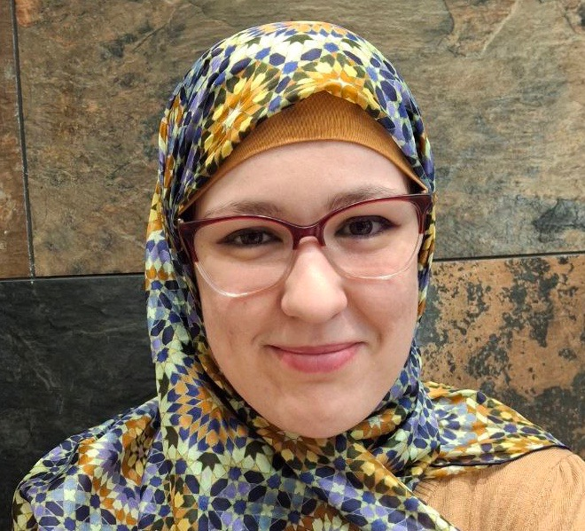

Nedjma Djouhra Ousidhoum نجمة جوهرة أوسيدهم
Lecturer (Assistant Professor)
OusidhoumN (at) cardiff (dot) ac (dot) uk Office 5.50 Abacws building, Cardiff.I am a Lecturer (Assistant Professor) at the School of Computer Science and Informatics at Cardiff University. I lead the Cardiff NLP Group and am also a Visiting Academic at the University of Cambridge.
Previously, I was a Postdoctoral Research Associate at the University of Cambridge, working with Andreas Vlachos. I completed my PhD at the Hong Kong University of Science and Technology (HKUST), supervised by Yangqiu Song and Dit-Yan Yeung.
My research focuses on Natural Language Processing and Computational Social Science, particularly in automated fact-checking, human-centred NLP, bias (and related tasks), and low-resource languages. For more, see my curriculum vitae or my Google Scholar.
You can find me on Twitter/X, BlueSky, and LinkedIn.
Recent News
December 2025: I am a Programme Chair for *SEM 2026 (co-located with ACL 2026), together with Saif M. Mohammad. If you would like to volunteer as a reviewer or as an AC, please fill out this form.
November 2025: I am recruiting a fully funded PhD student to start in the next academic year (2026/2027). More details here. **If you are interested in the position, please do apply! Review the information in the link and submit your application through the portal rather than by email. I am happy to answer specific questions about the position, but I may not be able to respond to questions related to content already covered in the link or meet individually with the candidates.**
October 2025: I am serving as the Ethics Chair for EACL 2026. Please fill out this form if you can complete an ethics review by late November or early December.
September 2025: I am a co-organiser of SemEval-2026 Shared Task 7: Everyday Knowledge Across Diverse Languages and Cultures. You can register to participate on CodaBench.
August 2025: Accepted paper at EMNLP 2025 (Main): Social Good or Scientific Curiosity? Uncovering the Research Framing Behind NLP Artefacts with Eric Chamoun (lead), Michael Sejr Schlichtkrull, and Andreas Vlachos. Check out the preprint here.
August 2025: I am serving as Student Volunteers' Chair at EMNLP 2025. If you would like to apply for volunteering opportunities, please see this blog post and complete the form before 20 September.
July 2025: BRIGHTER: BRIdging the Gap in Human-Annotated Textual Emotion Recognition Datasets for 28 Languages received the Best Resource Paper Award at ACL 2025! You can find the paper and the slides here.
July 2025: Our shared task received the Best Task Award at SemEval 2025! Check out the paper.
July 2025: Building Better was featured in the ACL 2025 Multilinguality Panel. You can view the paper and slides.
July 2025: Naba Rizvi presented AUTALIC: A Dataset for Anti-AUTistic Ableist Language In Context at ACL 2025. Check out the paper here.
July 2025: Panellist at the NLP for Positive Impact Workshop at ACL 2025.
July 2025: Our Cardiff NLP group organised the 4th Cardiff NLP Workshop. For more details, please check our website.
May 2025: Three papers accepted to ACL 2025!
May 2025: Co-organiser of the MELT Workshop at COLM 2025.
May 2025: WorldCuisines: A Massive-Scale Benchmark for Multilingual and
Multicultural Visual Question Answering on Global Cuisines received the Best Theme Paper Award at NAACL 2025! You can view the paper here.
February 2025: Serving as Senior Area Chair for ACL 2025 (Multilinguality and Cross-Lingual NLP).

Education
2014–2021: PhD in Computer Science, HKUST, Hong Kong.
2010–2012: Master in Software Engineering, USTHB, Algeria.
2007–2010: Bachelor in Computer Science, USTHB, Algeria.
Academic Services
Senior Area Chair at ACL 2026.
Programme Co-Chair for *SEM 2026 (co-located with ACL 2026).
Ethics Chair at EACL 2026.
Area Chair at LREC 2026.
Action Editor at ACL Rolling Review; Area Chair at EMNLP 2025, AACL-IJCNLP 2025, EACL 2026.
Best Paper Committee member at EMNLP 2025.
Co-organiser of the MELT Workshop (co-located with COLM 2025).
Co-organiser of the Cardiff NLP Workshop.
Student Volunteer Chair at EMNLP 2025.
Senior Area Chair at ACL 2025 (Multilinguality and Cross-lingual NLP).
Area Chair at COLING 2025 (Ethics and Bias).
Action Editor at ACL Rolling Review; Area Chair at EMNLP 2024.
Reviewer for the Computational Linguistics and OSNEM journals.
Area Chair (Low-resource and Endangered Languages) at LREC–COLING 2024.
Area Chair (Ethics in NLP) at EACL 2024.
Senior Area Chair at EMNLP 2023 (Outstanding SAC Award).
Diversity and Inclusion Chair at ACL 2023; see blog post on visa statistics here.
Financial Accessibility Chair (part of D&I) at NAACL 2022.
Reviewer for ACL Rolling Review and major *CL 2019–2022 conferences (ACL/EMNLP/etc.).
Teaching
Fall 2025: CMT122 (Machine Learning for NLP), Cardiff University. (See resources)
Spring 2025: CM3202 (Emerging Technologies), Cardiff University (Co-taught).
Fall 2024: CMT122 (Machine Learning for NLP), Cardiff University. (See resources)
Spring 2024: CM3202 (Emerging Technologies), Cardiff University.
Fall 2022: Supervisor, Object-Oriented Programming, University of Cambridge.
Summer 2022: Supervisor, 3 summer projects, Pembroke College, Cambridge.
Spring 2018: COMP4911 IT Entrepreneurship, HKUST.
Spring 2017: COMP4221 Natural Language Processing, HKUST.
Spring 2016: COMP4431 Multimedia Computing, HKUST.
Fall 2015: COMP1029Q C Programming Bridging Course, HKUST.
Publications
Eric Chamoun, Nedjma Ousidhoum, Michael Sejr Schlichtkrull, Andreas Vlachos: Social Good or Scientific Curiosity? Uncovering the Research Framing Behind NLP Artefacts. (EMNLP2025 [Main Conference])[Preprint]Nedjma Ousidhoum, Meriem Beloucif, Saif M. Mohammad: Building Better: Avoiding Pitfalls in Developing Language Resources when Data is Scarce. (ACL2025 [Main Conference]) [Paper][Slides]
Shamsuddeen Hassan Muhammad*, Nedjma Ousidhoum*, Idris Abdulmumin, Jan Philip Wahle, Terry Ruas, Meriem Beloucif, Christine de Kock, Nirmal Surange, Daniela Teodorescu, Ibrahim Said Ahmad, David Ifeoluwa Adelani, Alham Fikri Aji, Felermino Ali, Ilseyar Alimova, Vladimir Araujo, Nikolay Babakov, Naomi Baes, Ana-Maria Bucur, Andiswa Bukula, Guanqun Cao, Rodrigo Tufino Cardenas, Rendi Chevi, Chiamaka Ijeoma Chukwuneke, Alexandra Ciobotaru, Daryna Dementieva, Murja Sani Gadanya, Robert Geislinger, Bela Gipp, Oumaima Hourrane, Oana Ignat, Falalu Ibrahim Lawan, Rooweither Mabuya, Rahmad Mahendra, Vukosi Marivate, Andrew Piper, Alexander Panchenko, Charles Henrique Porto Ferreira, Vitaly Protasov, Samuel Rutunda, Manish Shrivastava, Aura Cristina Udrea, Lilian Diana Awuor Wanzare, Sophie Wu, Florian Valentin Wunderlich, Hanif Muhammad Zhafran, Tianhui Zhang, Yi Zhou, Saif M. Mohammad: BRIGHTER: BRIdging the Gap in Human-Annotated Textual Emotion Recognition Datasets for 28 Languages.(Best resource paper at ACL2025) [Paper][Slides] (* Equal contribution)
Naba Rizvi, Harper Strickland, Daniel Gitelman, Tristan Cooper, Alexis Morales-Flores, Michael Golden, Aekta Kallepalli, Akshat Alurkar, Haaset Owens, Saleha Ahmedi, Isha Khirwadkar, Imani Munyaka, Nedjma Ousidhoum: AUTALIC: A Dataset for Anti-AUTistic Ableist Language In Context. (ACL2025 [Main Conference])[Paper]
Shamsuddeen Hassan Muhammad*, Nedjma Ousidhoum*, Idris Abdulmumin, Seid Muhie Yimam, Jan Philip Wahle, Terry Ruas, Meriem Beloucif, Christine De Kock, Tadesse Destaw Belay, Ibrahim Said Ahmad, Nirmal Surange, Daniela Teodorescu, David Ifeoluwa Adelani, Alham Fikri Aji, Felermino Ali, Vladimir Araujo, Abinew Ali Ayele, Oana Ignat, Alexander Panchenko, Yi Zhou, Saif M. Mohammad: SemEval-2025 Task 11: Bridging the Gap in Text-Based Emotion Detection. (Best Task Description Paper at SemEval 2025, co-located with ACL2025)[Preprint] (* Equal contribution)
Naba Rizvi, Mohammed Rizvi, Alexis Morales Flores, Nedjma Ousidhoum, Imani Munyaka: From Granular Grief to Binary Belief: A Collaborative Optimization of Annotation Techniques for Anti-Autistic Language. (ACM SIGCHI Conference on Computer-Supported Cooperative Work & Social Computing, CSCW2025)[Paper].
Shamsuddeen Hassan Muhammad, Idris Abdulmumin, Abinew Ali Ayele, David Ifeoluwa Adelani, Ibrahim Said Ahmad, Saminu Mohammad Aliyu, Nelson Odhiambo Onyango, Lilian D. A. Wanzare, Samuel Rutunda, Lukman Jibril Aliyu, Esubalew Alemneh, Oumaima Hourrane, Hagos Tesfahun Gebremichael, Elyas Abdi Ismail, Meriem Beloucif, Ebrahim Chekol Jibril, Andiswa Bukula, Rooweither Mabuya, Salomey Osei, Abigail Oppong, Tadesse Destaw Belay, Tadesse Kebede Guge, Tesfa Tegegne Asfaw, Chiamaka Ijeoma Chukwuneke, Paul Röttger, Seid Muhie Yimam, Nedjma Ousidhoum: AfriHate: A Multilingual Collection of Hate Speech and Abusive Language Datasets for African Languages (NAACL2025). [Paper]
Genta Indra Winata, Frederikus Hudi, Patrick Amadeus Irawan, David Anugraha, Rifki Afina Putri, Yutong Wang, Adam Nohejl, Ubaidillah Ariq Prathama, Nedjma Ousidhoum, Afifa Amriani, Anar Rzayev, Anirban Das, Ashmari Pramodya, Aulia Adila, Bryan Wilie, Candy Olivia Mawalim, Ching Lam Cheng, Daud Abolade, Emmanuele Chersoni, Enrico Santus, Fariz Ikhwantri, Garry Kuwanto, Hanyang Zhao, Haryo Akbarianto Wibowo, Holy Lovenia, Jan Christian Blaise Cruz, Jan Wira Gotama Putra, Junho Myung, Lucky Susanto, Maria Angelica Riera Machin, Marina Zhukova, Michael Anugraha, Muhammad Farid Adilazuarda, Natasha Santosa, Peerat Limkonchotiwat, Raj Dabre, Rio Alexander Audino, Samuel Cahyawijaya, Shi-Xiong Zhang, Stephanie Yulia Salim, Yi Zhou, Yinxuan Gui, David Ifeoluwa Adelani, En-Shiun Annie Lee, Shogo Okada, Ayu Purwarianti, Alham Fikri Aji, Taro Watanabe, Derry Tanti Wijaya, Alice Oh, Chong-Wah Ngo: WorldCuisines: A Massive-Scale Benchmark for Multilingual and Multicultural Visual Question Answering on Global Cuisines (Best Theme Paper Award at NAACL2025). [Paper][Data and Code]
Junho Myung, Nayeon Lee, Yi Zhou, Jiho Jin, Rifki Afina Putri, Dimosthenis Antypas, Hsuvas Borkakoty, Eunsu Kim, Carla Perez-Almendros, Abinew Ali Ayele, Víctor Gutiérrez-Basulto, Yazmín Ibáñez-García, Hwaran Lee, Shamsuddeen Hassan Muhammad, Kiwoong Park, Anar Sabuhi Rzayev, Nina White, Seid Muhie Yimam, Mohammad Taher Pilehvar, Nedjma Ousidhoum, Jose Camacho-Collados, Alice Oh: BLEnD: A Benchmark for LLMs on Everyday Knowledge in Diverse Cultures and Languages. (NeurIPS2024 Datasets and Benchmarks track,Best non-archival paper award at the C3NLP Workshop, co-located with ACL2024). [Paper] [Data and Code]
Dimosthenis Antypas, Christian Arnold, Jose Camacho-Collados, Nedjma Ousidhoum, Carla Perez-Almendros: Words as Trigger Points in Social Media Discussions. [Preprint]
Nedjma Ousidhoum, Shamsuddeen Hassan Muhammad, Mohamed Abdalla, Idris Abdulmumin, Ibrahim Said Ahmad, Sanchit Ahuja, Alham Fikri Aji, Vladimir Araujo, Abinew Ali Ayele, Pavan Baswani, Meriem Beloucif, Chris Biemann, Sofia Bourhim, Christine De Kock, Genet Shanko Dekebo, Oumaima Hourrane, Gopichand Kanumolu, Lokesh Madasu, Samuel Rutunda, Manish Shrivastava, Thamar Solorio, Nirmal Surange, Hailegnaw Getaneh Tilaye, Krishnapriya Vishnubhotla, Genta Winata, Seid Muhie Yimam, Saif M. Mohammad: SemRel2024: A Collection of Semantic Textual Relatedness Datasets for 13 Languages (Findings of ACL 2024). [Paper] [Data and Code][Slides][Poster]
Nedjma Ousidhoum, Shamsuddeen Hassan Muhammad, Mohamed Abdalla, Idris Abdulmumin, Ibrahim Said Ahmad, Sanchit Ahuja, Alham Fikri Aji, Vladimir Araujo, Meriem Beloucif, Christine De Kock, Oumaima Hourrane, Manish Shrivastava, Thamar Solorio, Nirmal Surange, Krishnapriya Vishnubhotla, Seid Muhie Yimam, Saif M. Mohammad: SemEval-2024 Task 1: Semantic Textual Relatedness for African and Asian Languages, in Proceeding of SemEval: The 18th International Workshop on Semantic Evaluation co-located with NAACL 2024. (Best Task Description Paper Honourable Mention). [Paper] [Data and Code]
Michael Schlichtkrull, Nedjma Ousidhoum, Andreas Vlachos: The Intended Uses of Automated Fact-Checking Artefacts: Why, How and Who (Findings of EMNLP 2023). [Paper] [Data][Poster]
Shamsuddeen Hassan Muhammad, Idris Abdulmumin, Abinew Ali Ayele, Nedjma Ousidhoum, David Ifeoluwa Adelani, Seid Muhie Yimam, Ibrahim Sa'id Ahmad, Meriem Beloucif, Saif M. Mohammad, Sebastian Ruder, Oumaima Hourrane, Pavel Brazdil, Felermino Dário Mário António Ali, Davis David, Salomey Osei, Bello Shehu Bello, Falalu Ibrahim, Tajuddeen Gwadabe, Samuel Rutunda, Tadesse Belay, Wendimu Baye Messelle, Hailu Beshada Balcha, Sisay Adugna Chala, Hagos Tesfahun Gebremichael, Bernard Opoku, Steven Arthur: Afrisenti: A Twitter Sentiment Analysis Benchmark for African Languages (EMNLP 2023). [Paper] [Data][Poster]
Shamsuddeen Hassan Muhammad, Idris Abdulmumin, Seid Muhie Yimam, David Ifeoluwa Adelani, Ibrahim Sa'id Ahmad, Nedjma Ousidhoum, Abinew Ayele, Saif M Mohammad, Meriem Beloucif : SemEval-2023 Task 12: Sentiment Analysis for African Languages (AfriSenti-SemEval) in Proceeding of SemEval: the 17th International Workshop on Semantic Evaluation co-located with ACL 2023. [Paper] [Data and Code]
Nedjma Ousidhoum*, Zhangdie Yuan*, Andreas Vlachos: Varifocal Question Generation for Fact-checking in Proceedings of EMNLP 2022. [Paper] [Code]. (* Equal contribution)
Nedjma Ousidhoum: On the Importance and Challenges of the Experimental Design of Multilingual Toxic Content Detection. PhD thesis 2021.
Nedjma Ousidhoum, Xinran Zhao, Tianqing Fang, Yangqiu Song, Dit-Yan Yeung: Probing Toxic Content in Large Pre-Trained Language Models in Proceedings of ACL-IJCNLP 2021. [Paper] [Code] [Presentation]
Nedjma Ousidhoum, Yangqiu Song, Dit-Yan Yeung: Comparative Evaluation of Label-Agnostic Selection in Multilingual Hate Speech Datasets in Proceedings of EMNLP 2020. [Paper] [Code] [Presentation]
Nedjma Ousidhoum, Zizheng Lin, Hongming Zhang, Yangqiu Song, Dit-Yan Yeung: Multilingual and Multi-Aspect Hate Speech Analysis" in Proceedings of EMNLP 2019. [Paper] [Code]
Nedjma Ousidhoum, Nacéra Bensaou: Towards The Refinement of the Arabic Soundex in Proceedings of NLDB 2013. [Paper]
Nedjma Ousidhoum, Asma Bensalah, Nacéra Bensaou: New Classical Arabic Soundex Algorithm in Proceedings of CIT 2012 the Second Conference on Advances in Communication and Information Technology.[Paper]
Talks
Panelist at the NLP for Positive Impact Workshop (co-located with ACL 2025).NLP for Low-resource Languages flash talk. Multilingualism in the Era of Artificial Intelligence Workshop. July 2024.
NLP for Low-resource Languages Discussion. CollaborativeNLP Workshop. July 2024.
On Benchmarking and Building resources: The inevitable and the preventable pitfalls. Queen Mary University of London (Seminar). March 2024.
What Is Needed Vs What is Built in NLP: Toxic Language Detection and Automated Fact-checking Models As Use Cases. Uppsala NLP Seminar. May 2023.
What Is Needed Vs What is Built in NLP: Toxic Language Detection and Automated Fact-checking Models As Use Cases. CohereAI Community Talks. Recording. May 2023.
Expectations vs. Reality: Doing Multilingual Toxic Content Detection in NLP. Aston Institute of Forensic Linguistics. May 2023.
What Is Needed Vs What is Built in NLP: Toxic Language Detection and Automated Fact-checking Models As Use Cases. Cardiff NLP Seminar. January 2023.
Being a Researcher in Arabic NLP. Panel discussion at WiNLP Workshop (co-located with EMNLP 2022). December 2022.
Arabic Toxic Content Detection in NLP. "Arabic AI and Toxic Online Content Detection" Panel discussion at IWABigDAI. May 2022.
Expectations vs. Reality: Lessons Learned from Working on Toxic Content Detection in NLP. Language Technology Group Seminar (Hamburg Universität). February 2022.
Expectations vs. Reality: Lessons Learned from Working on Toxic Content Detection in NLP. Cambridge NLIP Seminar (University of Cambridge). January 2022.
Expectations vs. Reality: Lessons Learned from Working on Toxic Content Detection in NLP. MilaNLP Group Seminar (Bocconi University, Milan). September 2021.
Challenges in Toxic Content Detection. Language and Multimodal AI Lab (LAMA) Group Seminar (Imperial College London). August 2021.
Normalizing the Experimental Design of Multilingual Hate Speech Detection. Group Seminar of the Digital Technologies Research Center (National Research Council, Canada). November 2020.